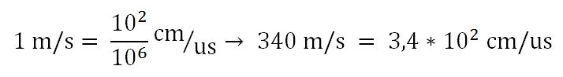

Un sensore a ultrasuoni come il HC SR 04 misura il tempo impiegato dalle onde sonore emesse da una sorgente a ritornarvici dopo aver incontrato un ostacolo che le riflette. Il fascio di onde sonore emesso ha forma conica e lo stesso vale per le onde riflesse da un ostacolo, questo fa si che il sensore riceva molte riflessioni da diversi oggetti, ciò rende il sensore, da solo, incapace di distinguere un oggetto da un altro o aperture negli oggetti troppo piccole.

Calcolo distanza
La velocità del suono nell’aria alla temperatura di 20° è di circa 340 m/s e il sensore restituisce il tempo impiegato per andare e tornare dalle onde sonore in microsecondi, inoltre è comodo avere la misura in cm, quindi bisogna convertire la velocità del suono da m/s in cm/microsecondo:

Il tutto va ancora diviso per 2 in quanto il tempo che abbiamo convertito è quello impiegato per andare e tornare indietro dalle onde, mentre per calcolare la distanza dall’oggetto ci basta metà di questo tempo perché il tempo tiene conto del percorso di andata più quello di ritorno, la formula finale, dove t è il tempo restituito dal sensore in microsec è:
 Però questo valore è impreciso, perché le variabili in gioco sono molto sensibili. Abbiamo riscontrato valori imprecisi anche di 1-2cm, soprattutto nelle lunghe distanze.
Quindi abbiamo deciso di tracciare una relazione tra la distanza ed il tempo impiegato dall’ultrasuono a tornare:
Però questo valore è impreciso, perché le variabili in gioco sono molto sensibili. Abbiamo riscontrato valori imprecisi anche di 1-2cm, soprattutto nelle lunghe distanze.
Quindi abbiamo deciso di tracciare una relazione tra la distanza ed il tempo impiegato dall’ultrasuono a tornare:
 Rapporto medio: 58.04
Quindi abbiamo notato che il rapporto è pari a circa 58. Quindi la formula definitiva è:
Rapporto medio: 58.04
Quindi abbiamo notato che il rapporto è pari a circa 58. Quindi la formula definitiva è:
Funzionamento del sensore
Il sensore dispone di 4 pin: Vcc (+5V), Trigger, Echo, GND. Si invia un impulso alto sul pin Trigger per almeno 10 microsec, a questo punto il sensore invierà il ping sonoro e aspetterà il ritorno delle onde riflesse, il sensore risponderà sul pin Echo con un impulso alto della durata corrispondente a quella di viaggio delle onde sonore, dopo 38 millisec si considera che non sia stato incontrato alcun ostacolo.
Connessione del sensore ad arduino
Si connette il sensore a +5V e GND di Arduino rispettivamente ai pin Vcc e GND del sensore, e Trigger ed Echo a due porte qualsiasi di Arduino. Lo schema è il seguente:
Codice:
//////// DICHIARAZIONE PIN //////////////////////////////
int TRIGGER=8;
int ECHO=7;
//////// DICHIARAZIONE VARIABILI ////////////////////////
float distanza;
void setup() { // Funzione eseguita all'avvio di arduino
Serial.begin(9600); // Velocità comunicazione Seriale con PC
pinMode (TRIGGER, OUTPUT); // Invia il segnale
pinMode (ECHO, INPUT); // Riceve il segnale
}
/////////// FUNZIONE PRINCIPALE //////////////////////////
void loop() { // Funzione ciclica eseguita dopo void_setup()// Misuro distanza:
digitalWrite (TRIGGER, HIGH); // Mando un impulso che dura 10us
delayMicroseconds (10);
digitalWrite (TRIGGER, LOW);
distanza=pulseIn (ECHO, HIGH); // Aquisisco il tempo che l'impulso ci mette a tornare
distanza=distanza/58; // Divido il tempo per 58, costante trovata sperimentalmente che restituisce un risultato ottimale
Serial.print(distanza); // Scrive su serial monitor la distanza rilevata
Serial.print("\n");
delay(100);
}